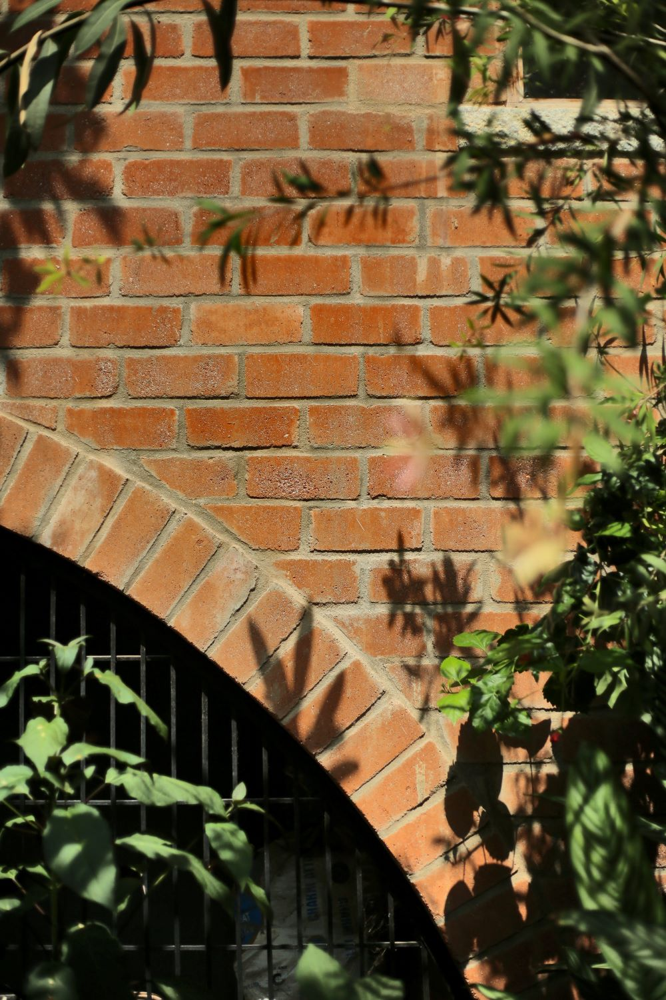
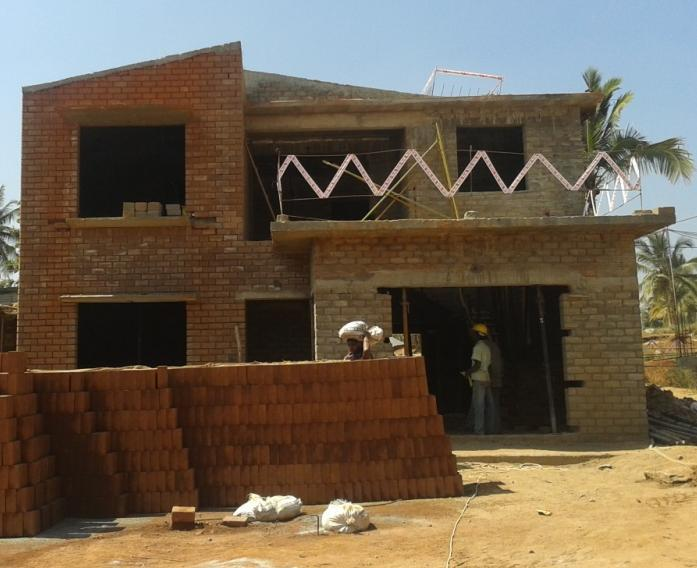
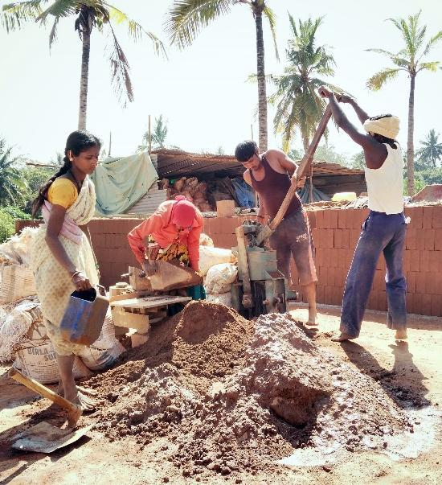
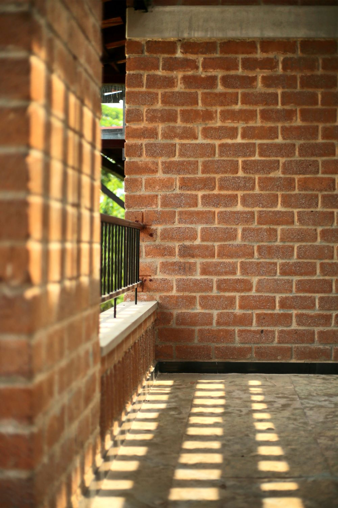
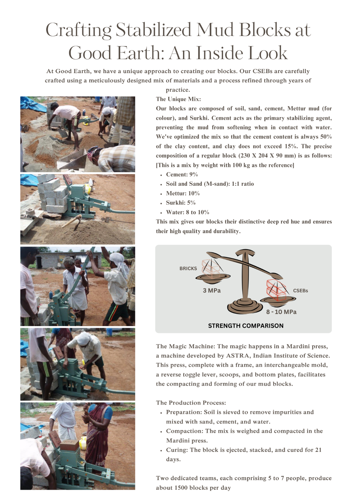

Materials
Materials
This article is a clone from the original GoodEarth Connect catalog. View the original post at:
Role of Compressed Stabilized Earth Blocks in sustainable construction ↗
Building from the Ground Up

In today’s construction landscape, bricks and concrete blocks are typically the go-to materials for building. But consider an alternative – a sustainable and eco-friendly material that not only provides strength and efficiency but also forges a connection with the earth beneath us. Picture a building that feels like it has emerged from the ground, blending with its surroundings. Compressed Stabilized Earth Blocks (CSEB) represents this extraordinary shift in sustainable construction, becoming the cornerstone of our vision at GoodEarth, playing a pivotal role as exemplified by Malhar Eco-Village.
Understanding CSEB
CSEB is a building material made from the very soil of the construction site, mixed with a small percentage of cement or lime. The blend is manually compressed to create robust and durable blocks that compete with their concrete counterparts, yet with a smaller carbon footprint.

CSEB Blocks stacked
CSEB Brickwork detail
Terracotta integration
Embracing CSEB at GoodEarth
The decision to adopt CSEB at GoodEarth for the Malhar Eco-Village was far from arbitrary. It was driven by a profound recognition of the material’s significant advantages and alignment with our commitment to sustainable development.
1
Superior Strength and Durability
CSEB provides enhanced strength and durability, defying the misconception that sustainable materials compromise on sturdiness. Our structures at Malhar Eco-Village stand tall against the test of time and weather, a testament to the robustness of CSEB.
2
Eco-Friendly Footprint
Opting for CSEB has substantially reduced our carbon footprint. The production process generates fewer emissions compared to traditional bricks since it avoids energy-intensive clay burning.
3
Cost-Effectiveness
CSEB offers a cost-effective solution, using local resources and reducing transportation costs. Additionally, its interlocking capabilities and uniform size minimise the need for mortar and plaster, further optimising expenses.
4
Thermal Comfort and Aesthetics
CSEB offer better thermal performance than conventional bricks, maintaining cooler interiors in summer and warmer in winter. This feature enhances overall comfort while reducing energy consumption.

Making of CSEB at GoodEarth: Parameters for development
Compression machine

Forming blocks
Creating CSEBs at GoodEarth goes beyond just the production process; it involves tailoring it to our specific context and requirements. Here are the key parameters we used to develop CSEBs that align with our vision:
1
Choice of mud mix
Instead of using traditional river sand, which is a depleting resource, we chose to work with a mix of Mettur mud and manufactured sand. This unique combination not only preserved the natural environment but also imbued the bricks with a beautiful reddish hue. This distinctive colour, reminiscent of the earth’s natural warmth, added an authentic touch to our structures, making them truly one with the land they stood on.
2
Aesthetic appeal
While the inherent qualities of CSEB remained unchanged, we recognized the importance of visual appeal. We strove to create bricks that were not only durable and eco-friendly but also aesthetically pleasing. Our aim was to cater to a wider audience, making sustainability a choice that was both practical and beautiful.
3
Cost-effectiveness
To demonstrate that CSEB was a viable alternative to mainstream materials like concrete blocks, we worked diligently to ensure that the costs were comparable. Our CSEB offered the same strength and durability as concrete blocks but with a smaller environmental impact, striking a perfect balance between sustainability and cost-effectiveness.
4
Balancing aesthetics and costs
We meticulously achieved a balance between aesthetics, the availability of skilled masons, and costs. Some of the block walls are plastered, while the “coloured” ones, with their rich reddish hue, are left exposed. This not only enhances the visual appeal but also reduced construction expenses without compromising on quality.
5
Preserving walls
In our commitment to ensure the longevity of CSEB walls, we paid close attention to the details. Adequate overhangs were provided to protect the walls from weathering effects. For exposed walls, a protective coat of transparent silicon was applied, safeguarding them from erosion over the years.

Bigger picture: Pioneering sustainable living
Beyond Malhar Eco-Village, GoodEarth aims to inspire mainstream development by demonstrating that CSEB is a viable alternative to traditional materials like concrete. CSEBs transcend aesthetics and efficiency; they encapsulate a philosophy of building that respects the earth, harnesses its power, and promotes harmony with the environment.
Prashanth Palanisamy, Director – Design, talks about Compressed Stabilized Earth Blocks.

Crafting mud blocks

Roofing integration

Courtyard details

Pathways & spaces
Earthen structures